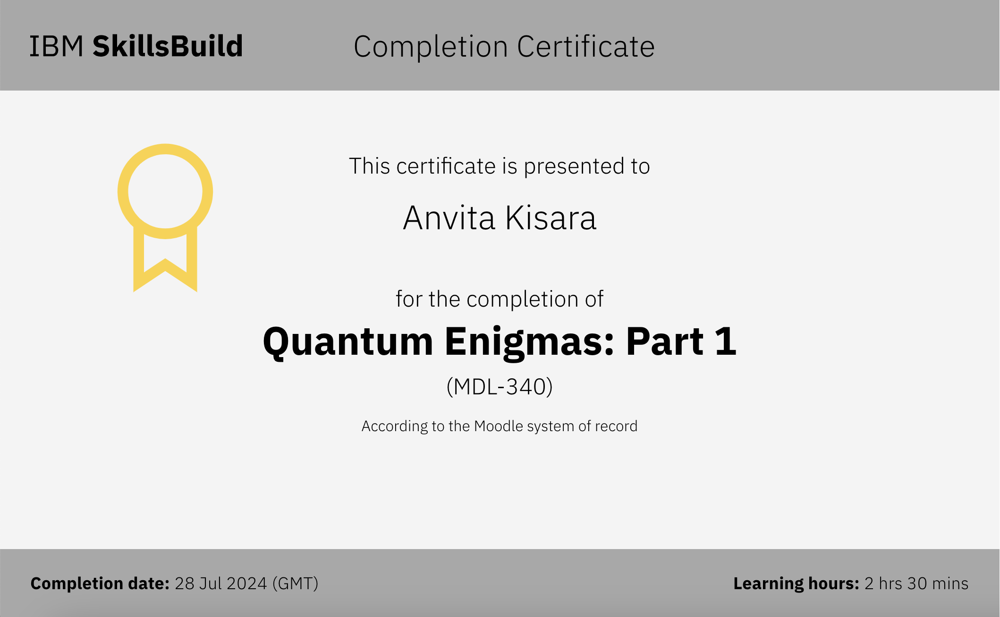
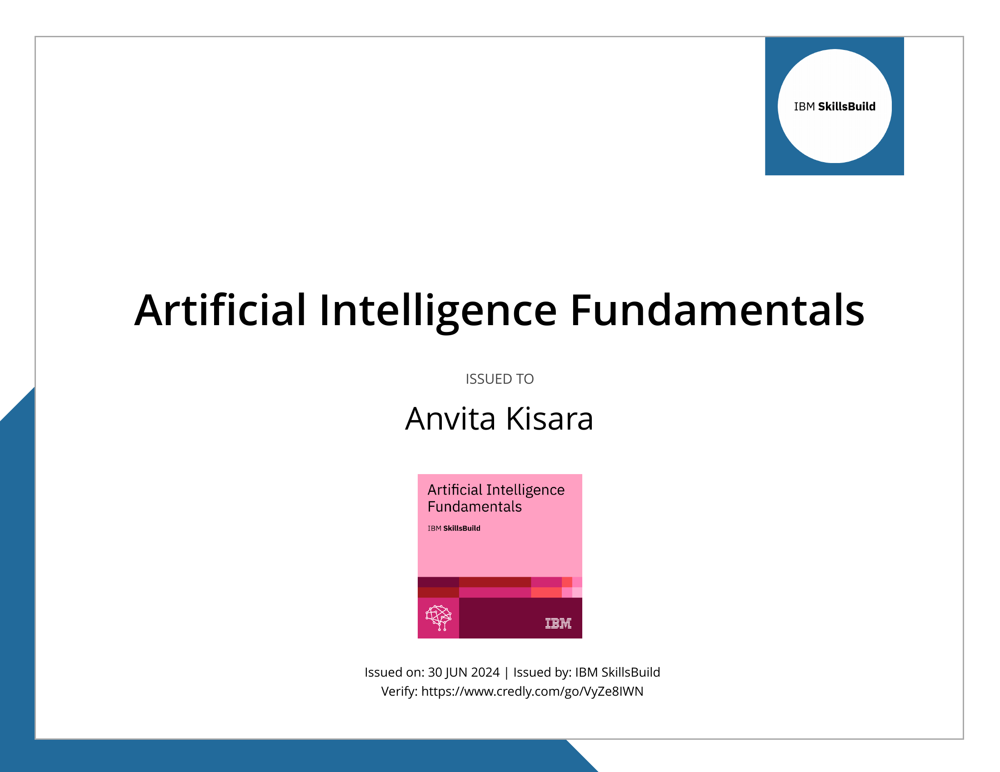
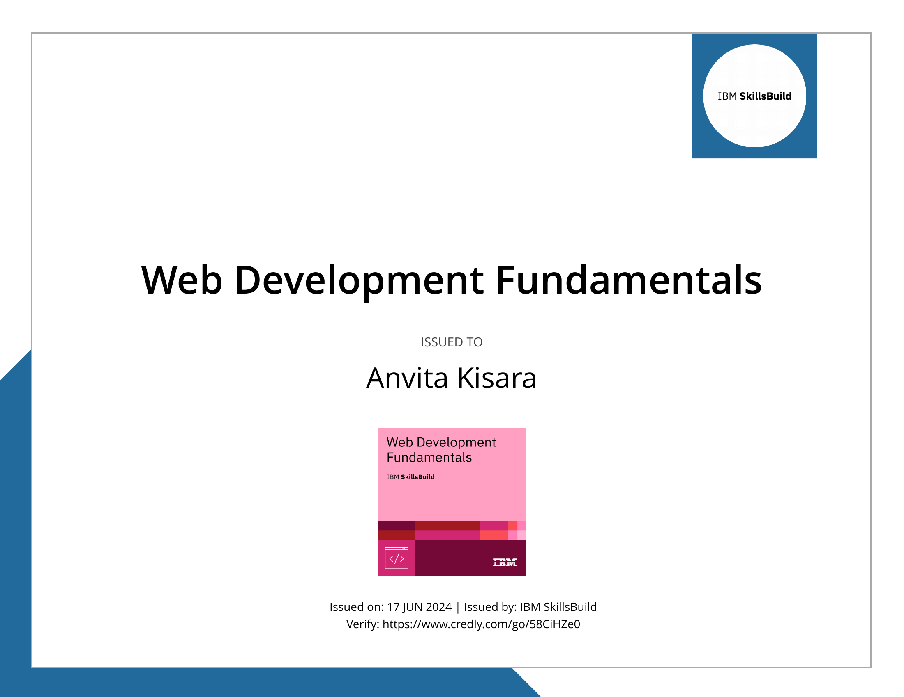
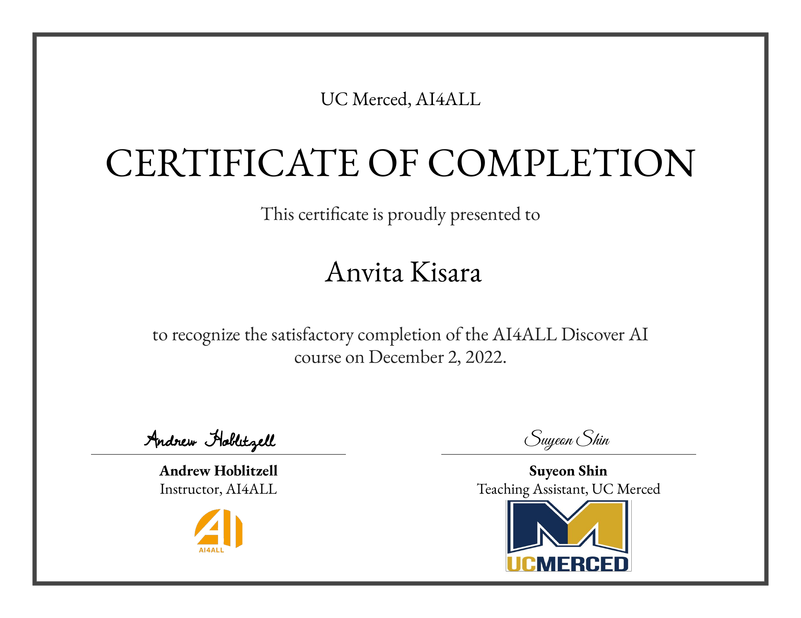

Designing interfaces
people understand
I am a passionate Data Engineer dedicated to building, evaluating, and refining real-world AI and computer vision systems.
I am a passionate Data Engineer dedicated to building, evaluating, and refining real-world AI and computer vision systems.
HealthIQ App
A fitness app built, featuring a user profile that turns ML-driven step goals into something users can actually trust. Personalized, transparent, and earned rather than arbitrary.
Predictive Text App
A React-based web application that captures and analyzes user writing behavior through real-time keyboard, mouse, and text interaction data for Human-Computer Interaction research.
Echo State Networks for Sequential Cognitive Modeling
A computational cognitive science research project investigating Echo State Networks for modeling and analyzing sequential cognitive processes.
BART Track Inspection
A computer vision inspection system that automates the detection of damaged and missing BART track cover boards using AI-powered image analysis.
Dyadic Association
A cognitive science research project that automated AI-to-AI word association experiments using Large Language Models to study semantic reasoning and conversational behavior.
YIG Sphere Array Spin Resonance Research
A physics research project investigating spin resonance behavior in Yttrium Iron Garnet (YIG) sphere arrays under controlled magnetic fields.
Hi, I’m Anvita Kisara! I am a Data Engineer and Computer Science graduate dedicated to building high-fidelity data foundations and intuitive system interfaces for real-world AI and humanoid robotics. I thrive on bridging raw physical data with intelligent model outputs, whether it’s annotating visual video streams, identifying subtle edge cases in multi-modal sensor logs, or designing decoupled API contracts that make complex ML predictions transparent and explainable to users. My approach combines technical rigor with human-centered design: ensuring not only that models perform accurately, but that their behavior remains intuitive and reliable when interacting with real people. During my undergraduate studies in Computer Science and Engineering at UC Merced, I developed a systematic approach to system architecture, data quality, and user experience. Through hands-on project work, I’ve managed data pipelines using machine learning models, annotated computer vision datasets using AWS SageMaker, and validated physical device performance across different hardware environments. This foundation allows me to oversee end-to-end data pipelines and relational database structures, while my focus on user experience drives me to transform complex technical constraints into seamless, highly functional systems. With a strong background in computer science, data systems, and user-centered thinking, I’m excited to bring my technical precision, structured logic, and passion for continuous pipeline optimization to the team at Figure AI as we advance physical AI and autonomous robotics.

Quantum Enigmas: Part 1
IBM SkillsBuild

Artificial Intelligence Fundamentals
IBM SkillsBuild
Cloud Computing Fundamentals
IBM SkillsBuild

Web Development Fundamentals
IBM SkillsBuild

Discover AI
AI4ALL & UC Merced
LET'S CONNECT
High-quality visual data is what allows autonomous systems to understand and navigate the physical world. I’m always excited to connect with teams building cutting-edge robotics, computer vision, and machine learning models -let’s talk!
anvitakisara@gmail.com